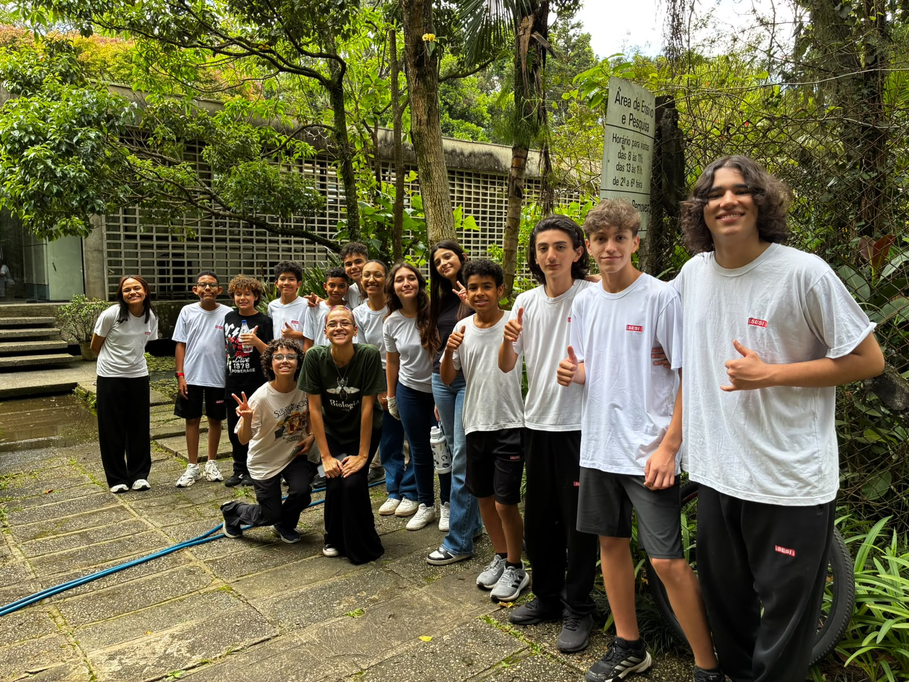
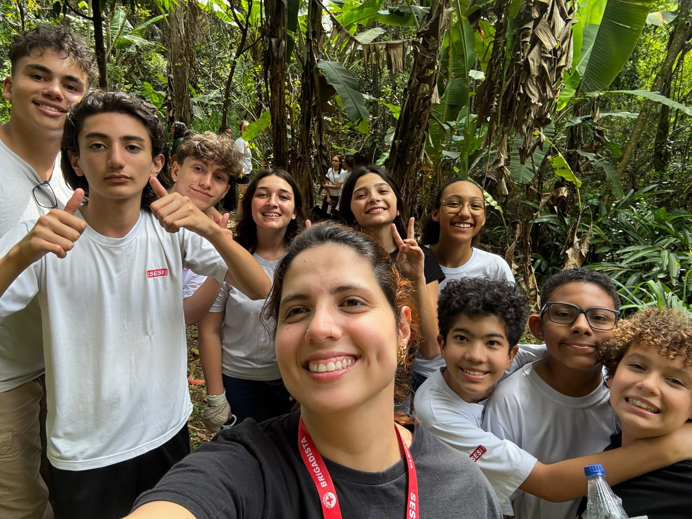

Conheça o projeto
Pequenas ideias.
Raízes para o futuro.
O ybyrá foi criado para complementar o trabalho da nossa equipe na FIRST LEGO League sobre sistemas agroflorestais, reunindo informações sobre plantas e representações visuais de propostas de SAFs.
Quem faz o ybyrá acontecer
Uma equipe, diferentes ideias e um propósito em comum.
A equipe participa com ideias, desenhos e programação. Estes registros, enviados pelo time, mostram momentos de convivência e aprendizado em meio à natureza.


Uma ideia que está crescendo
O ybyrá nasceu como um protótipo para complementar o trabalho da equipe na FIRST LEGO League sobre Sistemas Agroflorestais, os SAFs. A proposta é transformar informações da pesquisa em uma experiência que permita explorar plantas, funções e composições agroflorestais. O time participa da evolução do sistema com suas próprias ideias.
Este espaço vai reunir a história contada pelo próprio time: quem participa, como surgiram as ideias e o que cada descoberta ensinou durante o caminho.
Apoiar o trabalho da equipe
Reunir informações sobre espécies, mostrar os motivos de cada proposta e representar as fases de um SAF. O sistema complementa a pesquisa e a apresentação do trabalho da equipe na FIRST LEGO League.
Reconhecer e conhecer
As crianças propuseram um novo nome, uma nova logo, fotos das plantas, informações mais completas e um espaço para entrar ou criar uma conta.
Explicar cada passo
O sistema mostra os motivos das propostas e as fontes dos dados. O nome e as cores foram escolhidos pela equipe. O desenho do sistema crescendo nasceu de um modelo criado por um dos alunos.
Conheça a metodologia →Um nome para criar raízes
A equipe escolheu ybyrá, nome que associa à árvore em tupi-guarani. A marca une esse nome à flor de manacá-da-serra, com tons de roxo e verde.
A paleta escolhida reúne roxo, magenta, cinza, menta e verde. No site, as cores aparecem em pequenos destaques para manter a leitura confortável.